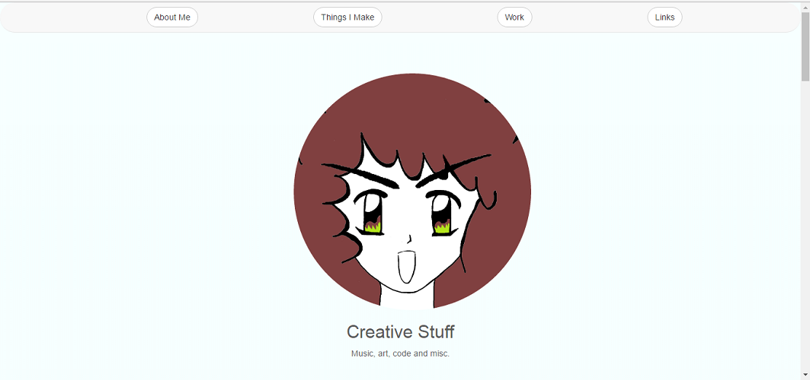

This Website
This is the obvious place to start!
I have a picture on the homepage. At time of writing, it looks like this:

I wanted a two-second MS Paint doodle of me.
I forgot that I can't draw lines.
Here's how it progressed.
So, there was a step before this where the whole picture was scratched out in the smallest brush tool. I used a 500px by 500px canvas and drew guidelines, then drew features on them in the same colour, erasing the guidelines as I went.
I didn't save it, so this is the earliest save I have. I've gone over the outline with the biggest brush and made it more even. I have a bad chicken-scratch habit that I can't kick. I redrew the right side of the face approximately 1 billion times.
This is a mix of brushes 2 and 3. (There are 4). And copious use of the eraser tool.
The eyes were uneven for a while; I went back much later and evened them out a bit. This took FOREVER. I discovered that drawing lines while zoomed out results in wobbly line quality. This step probably took an hour. :( When drawing in Paint, I start zoomed out to get the general shapes (it's easier to see if things are uneven at a distance), then zoom in for details.
Some colour experiments. You can see the old uneven eyes in these.
This one looked a bit odd when put in a round frame for the homepage. Also my eyes aren't that colour. The shade looked a bit too saturated for its surroundings.

Going back and adding eyebrows. I'd forgotten them. :) The eyes are still uneven!
Another colour experiment.
I'd evened the eyes by this point. My eyes arguably aren't this colour either. :) (Originally, I was aiming for hazel, but I liked the goofy flame effect caused by doing it wrong).

I tried cropping it. It looked weird.
Maybe I'll use this as an avatar.
Here's how the coloured version looked on the homepage:
It looked a bit too busy for the homepage, and odd in the round frame, so I recoloured it to match (at a glance, anyway; the gradient means that it doesn't quite match). I'd include a screenshot... but it's the homepage! Go there to look! :)
I often use a simple, flat monochrome colouring technique in paint. I draw suggestions of the hair, but don't isolate it from the background. Then I fill the hair. Next, I fill the eyes in the same colour. Sometimes misc islands of white are left over in interesting ways.
Painting in Paint
Some examples


This was my old homepage image, but I was worried people would think It was meant to be me. (It's just a random face. I like drawing them.)

Drawing in black and then filling in black at the end is often effective.